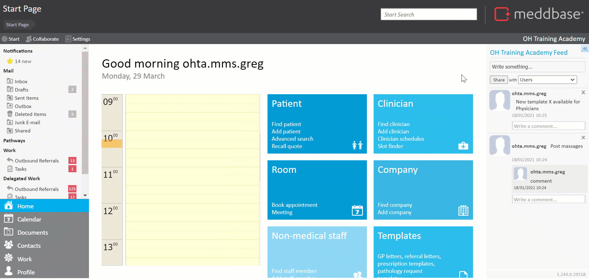

This article will provide detailed information on extracting information about Cases into Templates using Template Code, as well as using the Cases table in the reporting tool to produce relevant reports.
When building Templates a Meddbase user can use the below Template Codes to extract case-related information from the database into a document:
| Code | Action/Information extracted |
| {Referral.Case.SafeTitle} | External/Client facing Case Name. |
| {Referral.Case.Title} | Internal Case Name. |
| {Referral.Case.DateCreated} | Date Case was created. |
| {Referral.Case.Closed} | Returns True or False. |
| {Referral.Case.DateClosed} | Date/Time Case was Closed. |
| {Referral.Case.Id} | The unique ID number for a case. |
| {Referral.Case.DiagnosisName} | The case diagnosis name. |
| {Referral.Case.DiagnosisCode} | The case diagnosis code. |
Template code should be typed into a Template. Copy/paste is not recommended.
The Report Query Builder tool in Meddbase allows users to build complex report queries based on a selected Root Table, determining what will be displayed in each row of the report.
Meddbase reporting tool includes a Cases table which allows users to build reports which link cases and Referrals, and also report on all the newly created reportable fields like Case Safe Name.
To start building a report on Cases:
*The table below describes each column in the Cases table and the data it returns:
| Column | Action/Information extracted |
| ID | ID number automatically assigned to each Case |
| Title | Name of the Case |
| Date Created | Date and time when Case was created |
| Deleted | True or False |
| Diagnosis Name | Diagnosis assigned to the Case; list of Diagnosis Names configured in Admin>Common Catalogues>Diagnosis Codes>Name |
| Diagnosis Code | Code to the Case; list of Diagnosis Codes configured in Admin>Common Catalogues>Diagnosis Codes>Code |
| Closed | True or False |
| Date Closed | Date and Time when Case was closed Please note! 01/01/1753 00:00:00 = 0, False or Not Closed |
| Safe Title | Safe Names for Cases configured in Admin>Common Catalogues>Case Names>Safe name; Safe names are visible e.g. to managers using the Referral Portal |
| All Clinical Form | An array of all clinical form fields that were filled in within a case |
Click here for a detailed report on selecting a root table. Subsequent articles explaining the process of building a report can also be found in the same section of the Knowledgebase.
